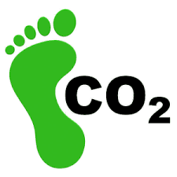

Wat betekent ecologische voetafdruk?
De ecologische voetafdruk laat zien hoeveel invloed iemand heeft op het milieu. Daarbij kijk je bijvoorbeeld naar energiegebruik, vervoer, voeding en consumptie. Hoe meer grondstoffen en energie iemand gebruikt, hoe groter de voetafdruk meestal is.
Mijn eigen keuzes
Onze voetafdruk wordt onder andere bepaald door het verwarmen van onze huizen, het gebruik van elektriciteit, hoe vaak ik reis en wat ik eet. Ook het kopen van kleding, apparaten en andere producten speelt mee. Veel spullen kosten energie om te maken, te vervoeren en te gebruiken.
We hebben geleerd dat kleine keuzes samen veel verschil kunnen maken. Minder lang douchen, lampen uitdoen, apparaten niet onnodig aan laten staan en bewuster reizen zijn voorbeelden van gedrag dat de uitstoot kan verlagen.
Wat We kunnen verbeteren
- Minder energie verspillen in huis
- Vaker kiezen voor fiets of openbaar vervoer
- Bewuster omgaan met voeding en minder verspillen
- Minder nieuwe spullen kopen en meer hergebruiken
